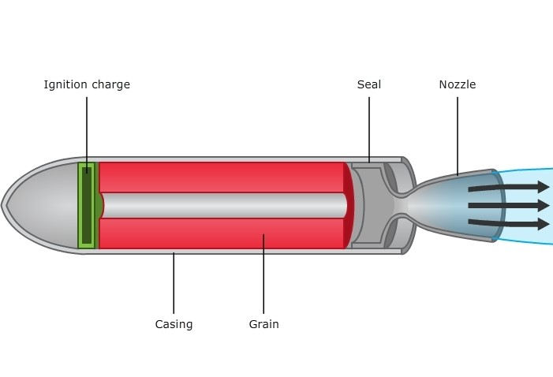
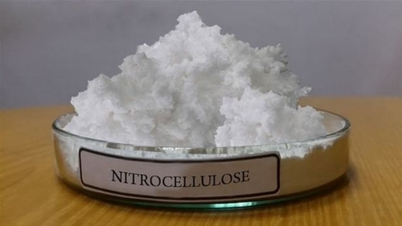
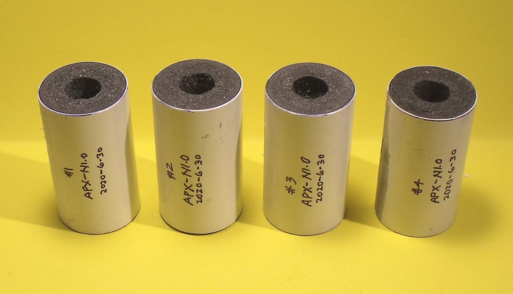
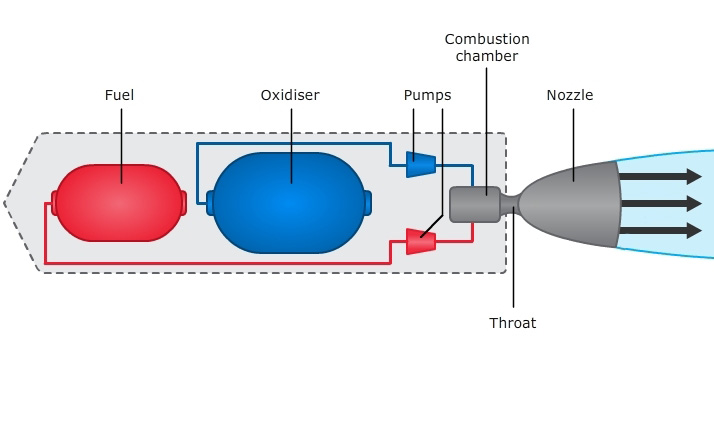
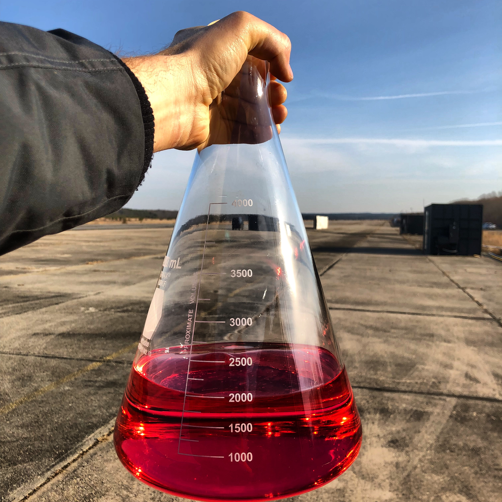
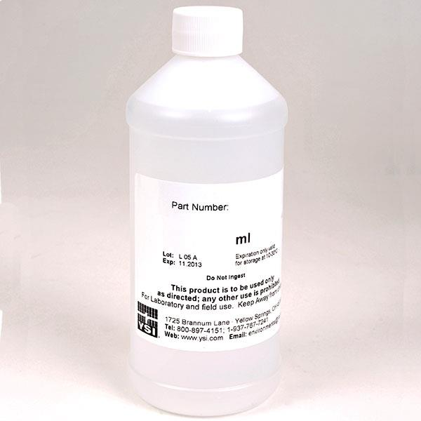

The rocket booster is integral to the function of the rocket; without propulsion, a
rocket is purposeless. Boosters work by channeling the (highly exothermic) combustion of various
propellants. This combustion produces gases (often referred to as exhaust gases), which, when ejected
through the booster's nozzle, provides a great deal of thrust.
There are 3 main types of rocket
booster: SRB (Solid Rocket Booster), LRB (Liquid Rocket Booster), and HRB (Hybrid
Rocket Booster). Hybrid Boosters are generally used far less than SRBs and LRBs, and are much less
prevalent in space travel, so this page focuses primarily on SRBs and LRBs.
Solid Rocket Booster
SRBs are the largest boosters used by a rocket; these boosters, due to their
size and mass, are discarded from the rocket during launch. This ejection of mass not only provides some
thrust, but also allows the LRBs to be more efficient in their propulsion for the remainder of the mission.
SRBs, as the name suggests,
use solid fuel. Once inside the booster, this fuel is often referred to as 'grain' due to the fact that
it's, well, granular. The ignition charge, once detonated, provides the necessary activation energy for
the combustion reaction to take place (solid fuels are mixed with their oxidizer beforehand, but kept
at extremely cold temperatures before combustion). The hollow chamber at the core of the booster maximizes
the exposed fuel, and thus maximizes the thrust of the booster.

There are two main classifications of propellant used in Solid Rocket Boosters: Homogeneous
propellant, and Composite propellant.
Homogeneous Propellant
Homogeneous propellants are just defined as propellants whose compositions are entirely
uniform. Despite this, there are still two subcategories of homogeneous propellant; single-base, and
double-base. Both types use (C6H7(NO2)3O5)n,
also known as nitrocellulose, dissolved in ethanol as the primary combustible.

In single-base homogeneous propellants, nitrocellulose dissolved in ethanol
is practically the only ingredient. Double-base homogeneous propellants also contain
a secondary combustible, typically C3H5N3O9
(known as 1,2,3-trinitroxypropane, or, more commonly, nitroglycerin). This secondary combustible acts
as a stabilizer.
Homogeneous propellants are not typically used for space travel. This is simply due to their
relatively inefficient performance; they provide relatively little thrust for their mass. This lack of efficiency
can be described as a "low specific impulse", or a low Isp.
Composite Propellant
Composite propellants, also called heterogeneous propellants, are simply propellants which
are not entirely uniform. The two most common types of composite propellant are Ammonium Perchlorate Composite
Propellant (APCP) and Ammonium Nitrate Composite Propellant (ANCP). Both types typically use Aluminum metal as fuel, as
Aluminum has a high energy density (specifically 4.8 × 107 kJ/m3) and is difficult to accidentally ignite, making it an ideal fuel.
APCP is used far more than ANCP because of its higher specific impulse, or Isp (thrust-mass efficiency).

Standard APCP is composed of 69% Ammonium Perchlorate (NH4ClO4),
16% Aluminum (Al), 12% Polybutadiene Acrylonitrile (referred to as PBAN, or polybutadiene prop-2-enenitrile),
2% Epoxide, and 1% Iron Oxide (Fe2O3). This APCP is commonly used in space travel.
All composite propellants are composed of a polymeric matrix (also called a polymeric binder),
which envelopes a granular solid oxidizer and a granular metal fuel. In the APCP detailed above, there are many components,
but each has its own specific purpose. The Aluminum metal acts as the primary fuel. The Ammonium Perchlorate acts as the oxidizer.
The PBAN acts as the polymeric binder, but can also behave as a secondary fuel. The Epoxide acts as a curing agent for the
PBAN. Curing is the process of cross-linking polymer chains in order to increase the rigidity, or "toughness", of the polymer.
The Iron Oxide acts as a catalyst for the reaction, lowering the activation energy required for the reaction to take place.
The combustion reaction that the APCP detailed above undergoes is as follows:
10Al(s) + 6NH4ClO4(s) →
4Al2O3(s) + 2AlCl3(s) + 12H2O(g)
+ 3N2(g)
Hess's Law states that the sum of the heats of formation of the products of a reaction minus the sum of
the heats of the formation of the reactants is equal to the net change in enthalpy of the reaction. Using this, and the
standard heats of formation for each reactant and product, the net enthalpy change of this reaction can be found.
ΔH = (4(-1657.7) + 2(-584.6) + 12(-241.8) + 3(0)) - (10(0) + 6(-295.8))
ΔH = -8926.8 kJ
Evidently, the combustion
of APCP is incredibly exothermic. Although this is only an approximation of real-world conditions, this shows why APCP is
such a popular solid propellant.
Liquid Rocket Booster
LRBs generally serve the purpose of secondary propulsion. Where SRBs provide the main thrust to
permit a rocket's escape from the Earth's gravity, and are then ejected, LRBs are never released from the rocket. These
boosters, which allow for a more controlled combustion, are typically used to propel rockets through
space and for maneuvering.

LRBs, which, by definition, use
liquid propellant, store the fuel and the oxidizer in different tanks. The fuel and oxidizer are brought into the
combustion chamber through controlled pumps, which allows for the combustion, and by extension, the propulsion, to
be finely and acutely controlled. This control is precisely what makes LRBs ideal for use as secondary propulsion and for maneuvering
purposes.
There are three main classifications of propellant used in Liquid Rocket Boosters:
Petroleum propellant, Hypergolic propellant, and Cryogenic propellant.
Petroleum Propellant
Petroleum propellants, are, not unexpectedly, propellants based on petroleum, otherwise
known as crude oil. These propellants generally offer middling specific impulse, and are almost always less efficient
than cryogenic propellants; the upside is that they can be stored at room temperature, and are cheaper.
The most common type of petroleum propellant used in space travel (by far) is
called RP-1, which either stands for Rocket Propellant-1 or Refined Petroleum-1. As its second name indicates,
all this is is essentially very refined petroleum. Specifically, RP-1 is a refined kerosene (C12H26
− C15H32), which is already a distilled petroleum mixture. RP-1, like all petroleum propellants,
doesn't spontaneously combust like its hypergolic counterparts. Because of this, the boosters that
use RP-1 (or any petroleum propellant) must be structured differently than standard Liquid Rocket Boosters.

Hypergolic Propellant
Hypergolic propellants are defined simply as fuels that rapidly, spontaneously combust when
coming into contact with their oxidizers. This spontaneity allows for an incredible degree of control over the
thrust that boosters using hypergolic propellants supply. This also allows for a simple LRB structure.
Accidental combustion is a greater hazard with these propellants.

The most common hypergolic propellant is hydrazine, or N2H4.
Other organic hydrazine variants are occasionally used, but hydrazine itself is a cornerstone in hypergolic propellants.
One such variant, which is the most commonly used variant (other than simple hydrazine) is CH3(NH)NH2,
otherwise known as monomethyl hydrazine. These propellants, being hypergolic, must be mixed with an oxidizer. The most
prevalent hypergolic oxidizer is N2O4, A.K.A. dinitrogen tetroxide, or simply nitrogen tetroxide.
The combustion reaction that hydrazine undergoes when oxidized with N2O4 is as follows:
2N2H4(l) + N2O4(l)
→ 3N2(g) + 4H2O(g)
Using Hess' Law and standard heats of formation, the net enthalpy change of this reaction can be found:
ΔH = (3(0) + 4(-241.8)) - (1(9.2) + 4(50.6))
ΔH = -1178.8 kJ
This is still quite an exothermic reaction,
but it's clear why it isn't used as the rocket's primary propulsion; APCP combustion is around 8 times as exothermic. That said, the
controllability and convenience of hypergolic fuels make them very valuable in spaceflight.
Cryogenic Propellant
Cryogenic propellants are, as the name suggest, simply propellants that must be stored at incredibly
cold temperatures. Temperatures that are deemed cryogenic range from 123 K (-150 °C) to 0 K (-273 K). The reason why these propellants
must be kept so cold is due to their low boiling points; if they weren't kept at these temperatures, they would vapourize and become
gases. Like petroleum fuels, cryogenic propellants do not spontaneously combust, so they cannot use the standard LRB structure. Storing
cryogenic propellants is inherently much more difficult than other liquid propellant types. The reason why this is still done is because
of the sheer efficiency of the fuels.
Liquid hydrogen (H2) is the most popular
cryogenic propellant; this is mainly due to its high specific impulse, which makes it a very efficient choice. Liquid methane (CH4) is another
cryogenic propellant, but it is far less prevalent. It is less efficient, but its higher density makes it a good choice in situations with
limited volume. Practically all cryogenic propellants use liquid oxygen (O2) as an oxidizer.

The combustion reaction undergone by liquid hydrogen oxidized with liquid oxygen is as follows:
2H2(l) + O2(l) → 2H2O(g)